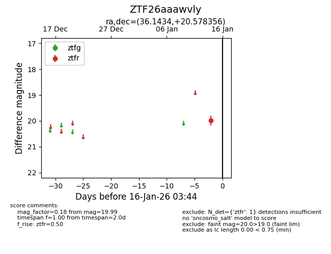
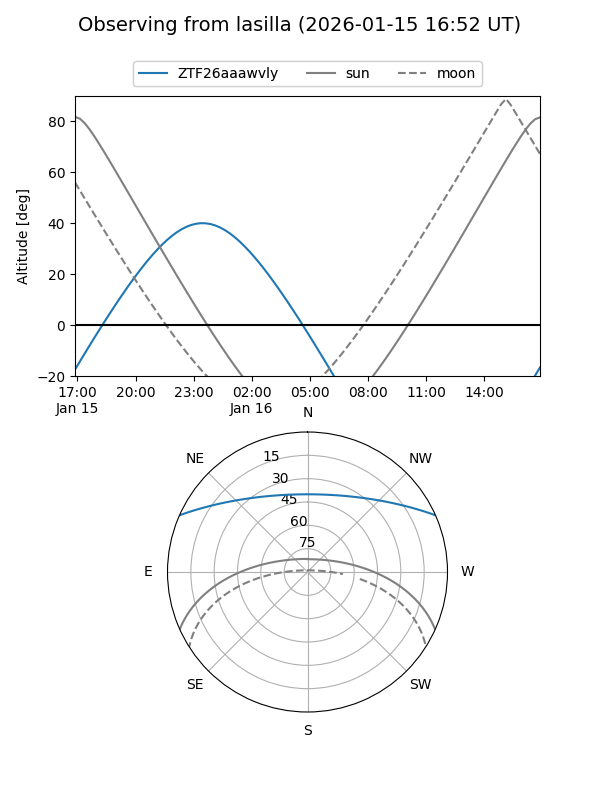
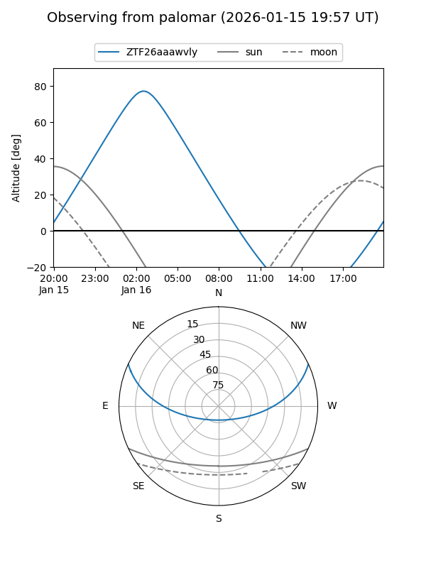

ZTF26aaawvly
Target ZTF26aaawvly at 2026-01-14 03:15
Aliases and brokers:
FINK: link
Lasair: link
ALeRCE: link
alt names
ZTF26aaawvly (ztf,fink_ztf)
Coordinates:
equatorial (ra, dec) = 36.1434,+20.57836
equatorial (HMS+DMS) = 02:24:34.42,+20:34:42.08
galactic (l, b) = (150.6295,-37.23382)
Flags:
Photometry:
last ztfr=19.99
1 ztfr detections
Lightcurve

Visibility


Additional plots